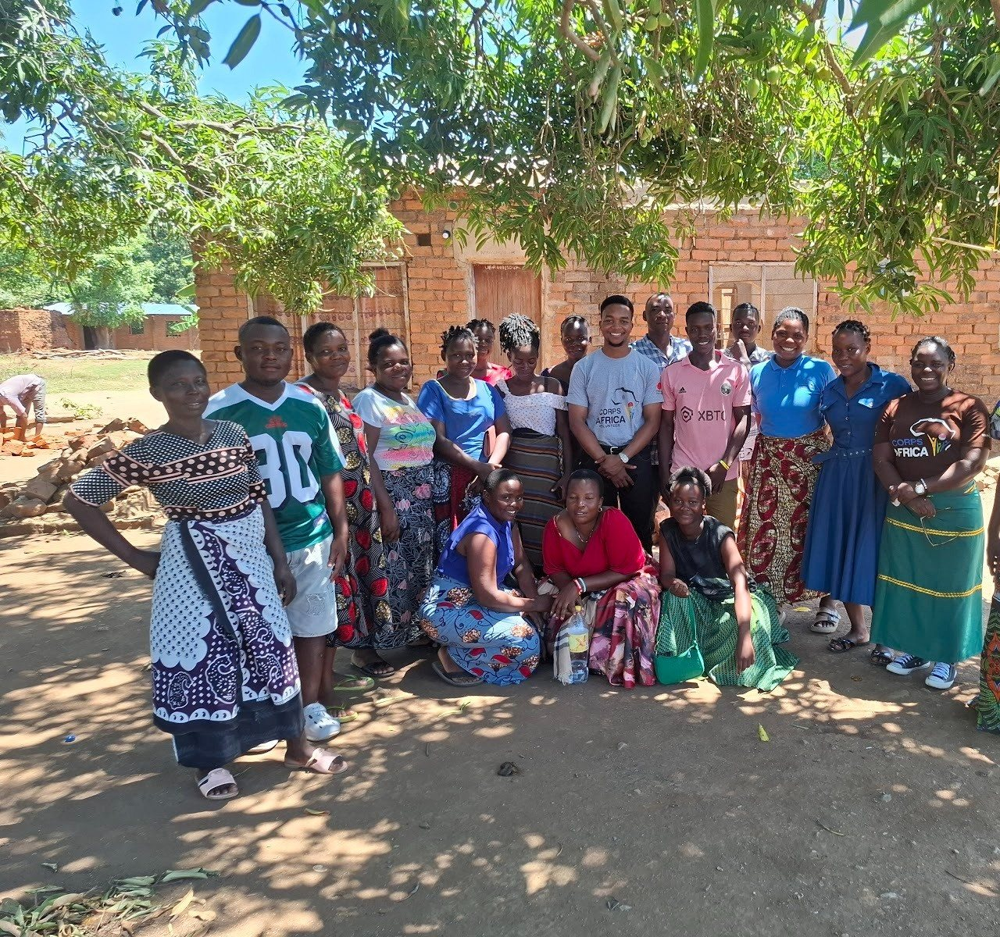
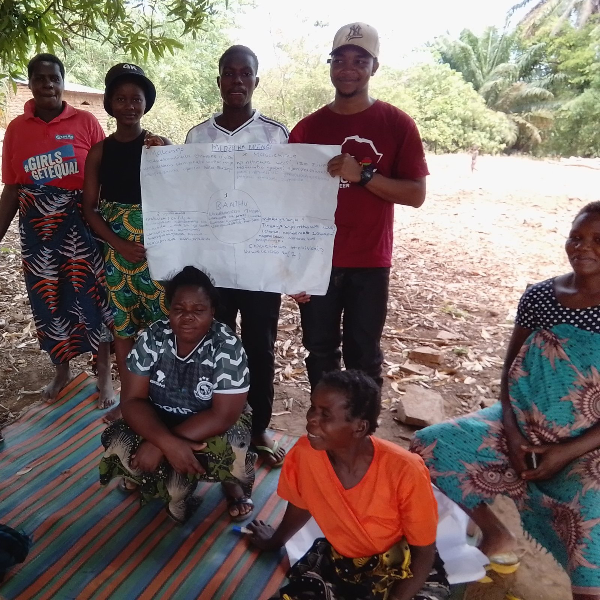
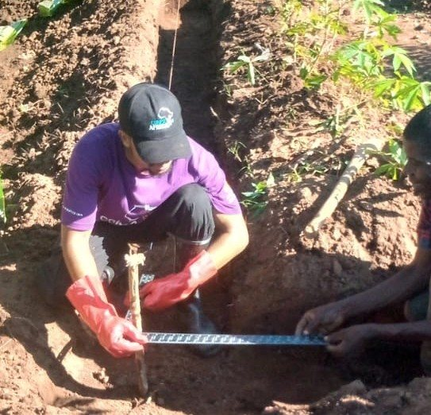
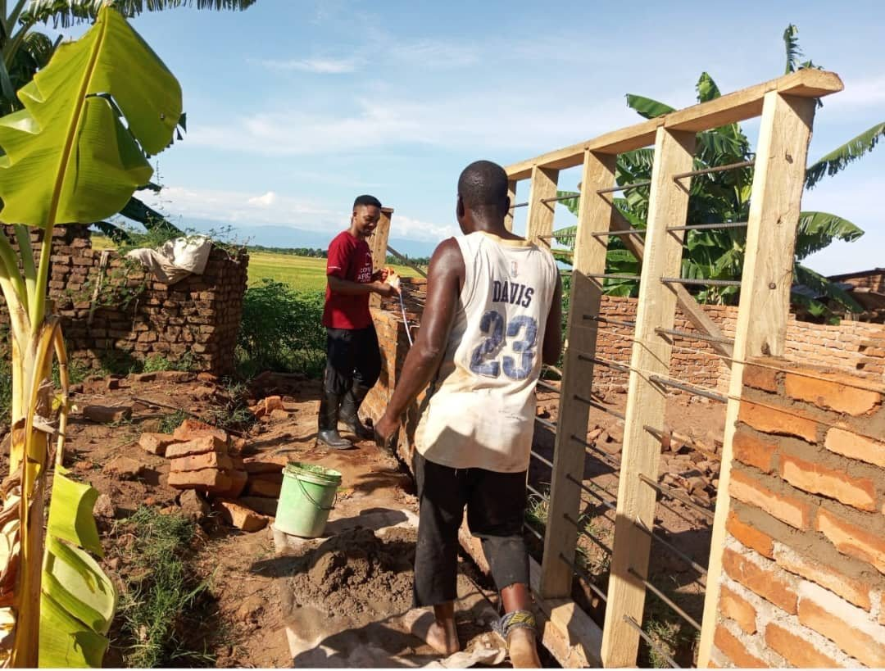
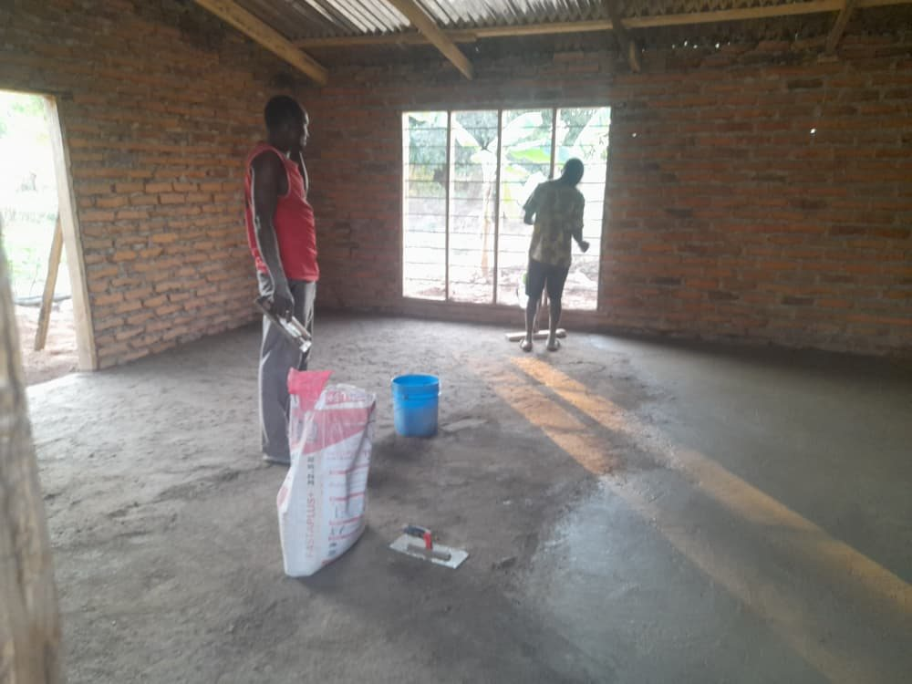
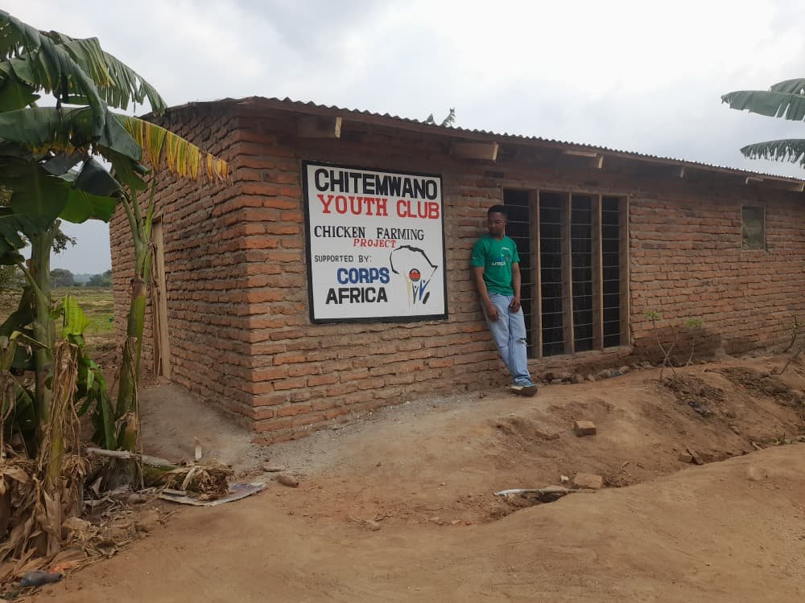
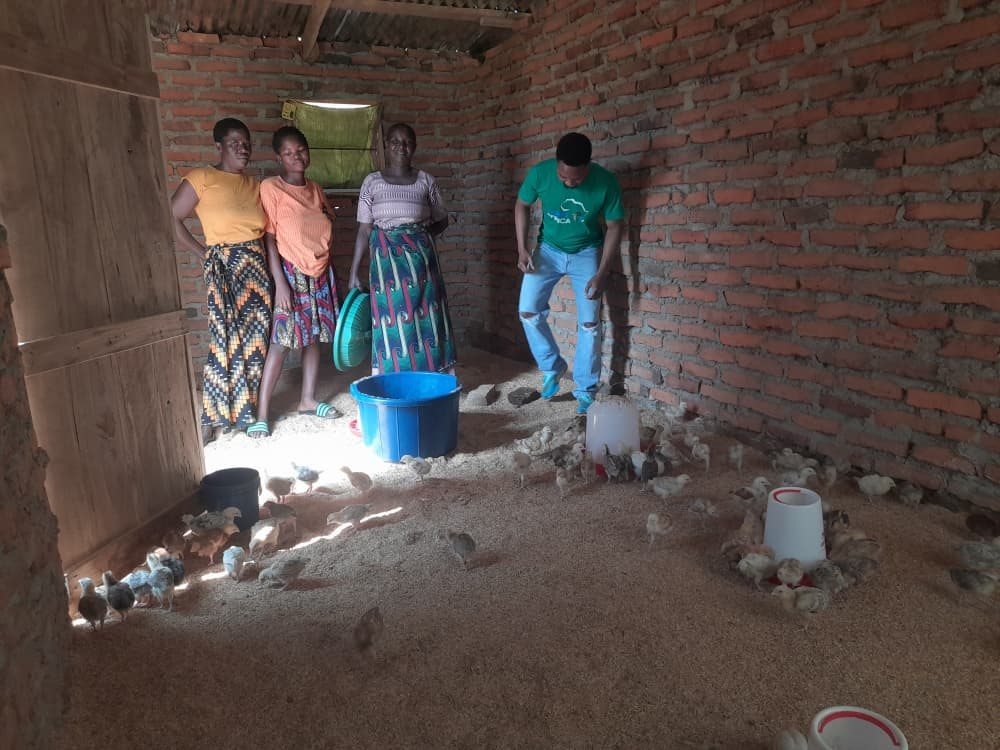
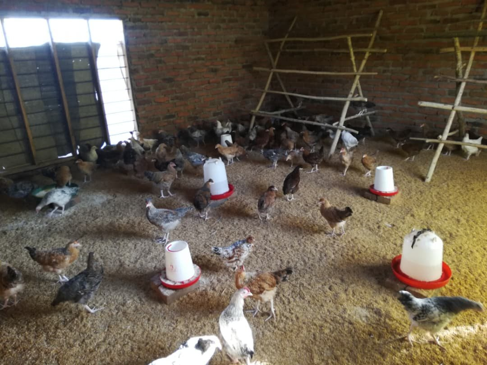

Chitemwano Chicken Farming Project
A women-led poultry enterprise, chosen and owned by the community, and delivered through member withdrawals, a failed foundation and a group dispute, with a full MEAL system built in from day one.








The problem
In Simeon, most households live on rice and cassava. Income arrives once a season, so families struggle all year to pay for food, school fees and health care. Girls are most at risk of leaving school.
The Chitemwano Youth and Women's Club wanted an income that did not depend on the harvest. After weighing several ideas against what they already had, they chose poultry.
How we did it, step by step
This was a team effort from planning to handover. Decisions were made with an 8-member project committee and the club members, and my role was to facilitate, guide and keep the work on track.
I facilitated community mapping, the Innovators' Compass and an idea selection matrix, so members chose the project together.
Members formed an 8-member project committee. I led a pre-mortem on risks with them and coached them as they wrote the proposal and budget.
Together we secured CorpsAfrica support and the MP's help, while members raised their share through piecework and a snack business.
The committee and I ran procurement and oversaw construction of the house, then organised poultry training with the veterinary officer.
I trained 14 leaders in project management and community-led M&E, then the enterprise was handed fully to the committee.
Monitoring, Evaluation, Accountability and Learning (MEAL)
From resources to long-term change
I designed the M&E system with the committee and mapped the project as a results chain, so every activity linked to a measurable output and outcome.
MWK 6.43M from CorpsAfrica, the community and the MP. Land, labour, bricks and sand. Veterinary and extension officers.
Community-led project selection, pre-mortem, committee training, construction, procurement, poultry training.
1 chicken house, 120 Sasso chicks, 21 members trained, an 8-member committee with bylaws, 14 leaders trained in M&E.
Knowledge up from 57% to 88%. A women-led enterprise keeping its own records. Income target: MK 65,700 to MK 85,600 a month.
Year-round household income, better nutrition, and children, especially girls, kept in school.
Indicator Tracking Table
Each indicator had a baseline and a target. Variances are reported honestly, including where we fell short.
| Indicator | Baseline | Target | Result | Variance explained |
|---|---|---|---|---|
| Members trained in poultry farming | 0 | 35 | 21 | 14 members left the group during implementation |
| Average knowledge score | 57.1% | 88.3% | 88.3% | Target met, every participant improved |
| Chicken house built to standard | 0 | 1 | 1 | No variance |
| Sasso chicks procured | 0 | 200 | 120 | Matched to resources; three-week-old birds chosen over day-old |
| Average monthly member income | MK 65,700 | MK 85,600 by July 2027 | Being tracked | Income tracking sheet and six-monthly household survey in place |
Test scores for all 21 participants
Hover a bar to see each score. Click the legend to compare.
How much of each target was reached
Hover a bar to see the result against its target.
Accountability
Every purchase was logged with its receipt and supplier, and materials were signed for on delivery. Community contributions were recorded and reported back at group meetings. The VDC and Group Village Headman provided oversight and a trusted route for resolving disputes.
Learning
A pre-mortem before implementation anticipated risks. Lessons were documented as they happened: vet builders and check their previous work, keep contingency in procurement plans, and keep a wider pool of interested members in case people drop out.
Data note: participant names and contact details are removed. All data shown is anonymised or aggregated.
What went wrong, and how we handled it
Members pulled out late
Several youth members withdrew, putting the project at risk. We brought in women who had shown interest, which kept momentum and the beneficiary base.
Suppliers shut overnight
The tax authority closed several shops on our buying day. We bought cement from an open supplier so building could start while the others reopened.
A foundation built badly
Poor workmanship wasted cement and weakened the foundation. The team chose quality over speed: it was demolished and rebuilt properly.
A three-week dispute
Disagreements halted work. The VDC and Group Village Headman, already part of the structure, brought members together and work resumed.
Financial accountability
How it was resourced, and how every kwacha was spent
I tracked the CorpsAfrica support in an automated funds tracker: 41 transactions, each with its date, supplier and receipt, spent down to exactly zero.
Support by source
Total MWK 6,429,000. Hover a section to see the amount.
Budget burn: CorpsAfrica support remaining
MWK 3.5M spent in stages as the project moved forward. Hover a point to see what was bought.
CorpsAfrica support spent by category
About 83% of the funds went directly into productive assets: the chicken house, the birds, their feed and equipment. Transport, mostly to bring healthy chicks from Mzuzu, took 12%, and other overheads stayed under 5%.
Hover a bar to see the amount and its share of the budget.
Built to last
The committee keeps monthly records of flock numbers, feed, vaccination, sales and spending, and reviews profit every quarter. Community bylaws protect the assets and settle disputes. A link with the local veterinary officer gives ongoing technical support.
A household income survey in July 2027 will measure progress against the income target.
"This project has created a meaningful opportunity for our women and youth to improve their livelihoods. The community has taken ownership."
Group Village Headman (GVH) Simeon